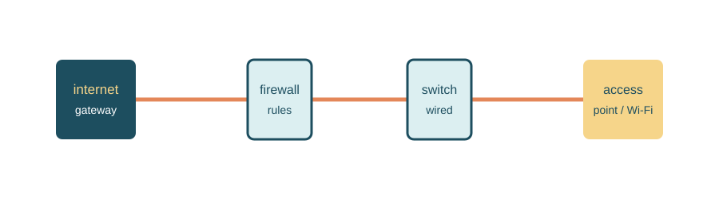
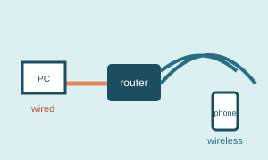
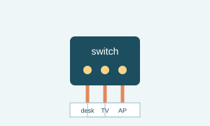

Page two
My basic setup
I like a setup that is easy to understand before it is fancy. The exact hardware can change, but these are the jobs each part needs to do.

Connection examples


Four useful pieces
- Gateway: Connects the home network to the internet service provider.
- Firewall: Decides which traffic should be allowed in or out.
- Switch: Gives wired devices a place to connect.
- Access point: Provides Wi-Fi without making every device wireless.
What I check first
Is the problem on one device or the whole network?
Does a wired connection work when Wi-Fi does not?
Did anything change recently, such as an update or new device?
Why I still like wired connections
Wi-Fi is convenient, but a wired connection is usually the first thing I choose for a desktop computer, television, or device that stays in one place. It avoids interference from walls and other wireless devices, and it gives me a simple comparison when I am trying to figure out whether a problem is caused by Wi-Fi or by the internet connection itself.
That does not mean every device needs a cable. Phones, tablets, and smart-home devices make more sense on Wi-Fi. The goal is to use each connection type where it fits best.
What I would improve next
- Label the cables and ports so that changes are easier to trace later.
- Make a short list of important device addresses and settings.
- Test Wi-Fi signal strength in the rooms that are farthest from the access point.